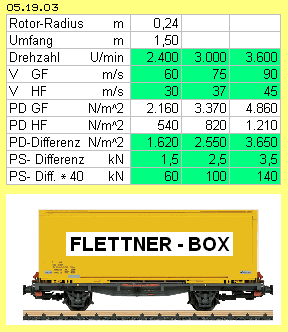
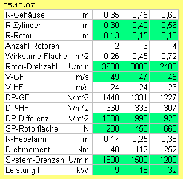

In den vorigen Kapiteln zum Glocken-Motor wurden die Bewegungs-Prinzipien an Tragflächen und Segeln in geschlossenen Behältern abgebildet, so dass Auftriebs- und Vortriebs-Kräfte ohne natürlichen (Fahrt-) Wind erzielt werden. Ebenso müsste das erfolgreiche Prinzip der rotierenden Zylinder in einem geschlossenen System zu realisieren sein. Nachfolgend werden die Möglichkeiten einer solchen ´Flettner-Box´ untersucht.
Unten rechts in Bild 05.19.01 ist der zylinder-förmige Rotor (blau) in einem größeren runden Hohl-Zylinder installiert. Durch die Drehung des Rotors wird per Haftreibung die Luft im Kreis gefördert. Die Luft wird durch einen engen Querschnitt (links) rasch hindurch gezogen. Im weiten Querschnitt (rechts) wird die Strömung entsprechend langsamer. Nach den bekannten Bernoulli-Gleichungen ergibt sich auf die ´Rohr-Wände´ statischer Druck unterschiedlicher Stärke. Daraus resultiert hier eine nach links gerichtete Schubkraft (aus der Differenz der roten und grünen Pfeile).
Inverse Anordnung
In Bild 05.19.02 bei B rotiert z.B. ein Rotor mit drei Rotor-Blättern (blau) entlang der konkaven, möglichst glatten Gleitfläche (GF, grün). Die Rotor-Blätter sind leicht angestellt, so dass sie die Luft entlang dieser Fläche ´abschälen bzw. absaugen´ (sehr viel effektiver als mit einem massiven Zylinder zu erreichen wäre). Es wird sich ein konzentrierter Potential-wirbel bilden. Alle anderen Innen-Flächen sollten rau sein, so dass die Strömung an der gegenüber liegenden Haftfläche (HF, rot) wesentlich langsamer ist. Damit dort die Luft möglichst ruhend ist, könnte dieser Bereich auch geschützt werden durch einen ´Gitter-Zaun´ (hier markiert durch die schwarzen Punkte).
In Bild 05.19.02 sind unten zwei Einheiten im Rumpf eines Schiffes installiert (E und F, hier z.B. mit nur jeweils zwei Rotor-Blättern). Wenn deren Gleitflächen so groß wie die Zylinder der ´Buckau´ und die beiden ´künstlichen Wirbelwinde´ vergleichbar schnelle Strömungen wären, liefe dieses Schiff ´volle-Kraft-voraus´ wie die ´Buckau´. Allerdings wäre dieses Schiff vollkommen unabhängig vom natürlichen Wind und der Vortrieb nach Belieben steuerbar.
Der Rumpf müsste kein hermetisch geschlossener Behälter sein, es könnten durchaus die Luken (grau) im Rumpf geöffnet sein. Es kommt nur darauf an, dass an den ´Sogseiten dieser internen Segel´ der statische Andruck reduziert ist.
Nutzung Freier Energie
In der gängigen Technologie werden Kraftwirkungen fast ausschließlich durch die Umwandlung einer Energie-Form in eine andere erreicht, wobei Energie-Konstanz gilt und unvermeidlich Verluste auftreten. Hier findet keine Energie-Umwandlung statt, hier wird die frei verfügbare Energie der normalen Molekular-Bewegung genutzt, indem deren (chaotische) Bewegungsrichtung nur ein klein wenig geordnet wird durch die Aufprägungen einer Strömung entlang gekrümmter Flächen. Im Vergleich zur ruhenden Luft schlagen die Luftpartikel mit geringerer Intensität gegen die Wand. Das ist alles - und allgemein bekannt. Ungewöhnlich ist nur die Nutzung dieses Effektes - was nach obigen Beispielen und Argumenten nun nachvollziehbar sein müsste.
Norm-Box und Power-Container 
In drei Spalten wird mit einer Drehzahl von 2400, 3000 und 3600 Umdrehungen je Minute gerechnet. Die Geschwindigkeit der Luftströmung entlang der Gleitfläche (V GF) ist dann etwa 60, 75 und 90 m/s. Die Geschwindigkeit an der Haftfläche (V HF) ist abhängig von der Distanz zwischen beiden Wänden, von der Qualität der Oberflächen und einem eventuell installierten Gitter. Hier wird mit der halben Geschwindigkeit gerechnet, also mit 30, 37 und 45 m/s. Der Behälter ist hermetisch geschlossen. Gerechnet wird mit der normalen Dichte Rho = 1.2 kg/m^3 (bei höherer Dichte wird die Leistung linear ansteigen).
Der dynamische Strömungsdruck ergibt sich aus der Formel PD=0.5*Rho*v^2. Entlang der Gleitfläche ergibt sich der Strömungsdruck (PD GF) mit rund 2160 und 3370 sowie 4860 N/m^2. Entlang der Haftfläche ist der Strömungsdruck (PD HF) geringer mit 540 und 820 sowie 1210 N/m^2. Die Differenz (PD Differenz) ist 1620 und 2550 sowie 3650 N/m^2. Das ist zugleich die Differenz des statischen Drucks (PS Differenz) zwischen der Gleit- und Haftfläche mit rund 1.5 und 2.5 sowie 3.5 kN/m^2. Die Schubkraft dieser ´Norm-Box´ von 1 m^2 wirksamer Fläche bei 1 m^3 Bauvolumen ist somit 1.5 bis 3.5 kN, abhängig von der Drehzahl. In Relation zum normalen Luftdruck sind das 1.5 bis 3.5 Hundertstel. Zum Vergleich: ähnliche Werte erreichen die Luftdruck-Glockenmotoren der vorigen Kapitel, bei Verkehrsflugzeugen sind es meist 6 % (´Flächen-Traglast´ 600 kg/m^2).
Bei obigem Beispiel in Bild 05.19.02 (bei E und F) waren im Rumpf zwei, sehr große Segelflächen fix montiert. Einheiten mit kleineren Rotoren erlauben eine bessere Nutzung des verfügbaren Raums. Man könnte z.B. in einem Container obige ´Norm-Box´ stapeln. Ein 40-Fuß-Container ist innen 2.3 m breit und hoch sowie 12.0 m lang. Es können 4*10 = 40 Einheiten installiert werden - womit dieser Power-Container eine Schubkraft von 60 oder 100 oder auch 140 kN bereit stellt.
Anwendungs-Möglichkeiten
Konventionelle Lokomotiven müssen schwer gebaut sein, weil sie Kräfte nur per Haftreibung auf die Schiene bringen. Anstelle dessen können leichte ´Power-Container´ eingesetzt werden, um einen Zug vorwärts oder rückwärts zu schieben.
Bei Triebwagen, Bussen und Lastkraftwagen werden Kräfte ebenso nur per Haftreibung übertragen. Aufgrund der relativ flachen Bauweise könnten auch Unterflur-Einheiten montiert werden. Je nach momentanem Bedarf können einzelne Boxen aktiviert werden.
Bei Luftfahrzeugen werden aber bevorzugt die Glocken-Motoren der vorigen Kapitel eingesetzt. Dort sind die Rotoren flache Scheiben (bzw. kegel- oder glockenförmig) und mehrere Rotoren sind auf einer Welle zu montieren. Sie erreichen vergleichbare Schubkräfte bei geringerem Bauvolumen.
Flettner-Kraftwerk
In Bild 05.19.05 sind die generellen Bauelemente skizziert. Oben links ist wieder die Einheit mit zwei Rotoren und jeweils zwei leicht angestellten Rotor-Blättern (blau) eingezeichnet. Rechts ist ein vertikaler Längsschnitt dargestellt, wobei dieser Motor natürlich auch mit horizontaler Welle zu betreiben ist. Unten links ist ein Keilriemen-Getriebe schematisch dargestellt.
In einem runden Gehäuse (G, hellgrau) ist die Systemwelle (SW, dunkelgrau) drehbar gelagert. An dieser sind oben und unten scheibenförmige Rotorträger (RT, grau) fest montiert. In diesen ist drehbar jeweils die Welle des Rotors (RO, blau) gelagert. An dieser sind zwei Arme oder Scheiben (hellblau) fest montiert. Außen sind dort jeweils die Rotor-Blätter (dunkelblau) fest montiert. Der obere und untere Rotorträger ist mit einer Wand verbunden. Dieser runde Zylinder (dicke schwarze Linien) rotiert mit der Systemwelle, nach außen geschützt durch das Gehäuse.
Die Drehung der Systemwelle und der Rotorwelle wird durch ein Keilriemen-Getriebe synchronisiert. Ein Keilriemen (dunkelgrün) läuft einerseits um ein Rad an der Rotor-Welle, andererseits um ein Rad zur Steuerung der Maschine (RR und SR). Im laufenden Betrieb ist das Steuer-Rad ortsfest an das Gehäuse gekoppelt. Die System-Welle rotiert (in diesem Beispiel) links-drehend, die Rotor-Welle rechts-drehend (hier z.B. mit Übersetzung von 1:3).
Die Luft bewegt sich im Sinne eines Potential-Wirbels: mit gleichbleibender absoluter Geschwindigkeit bewegt sie sich nahe zur System-Welle mit größerer Winkel-Geschwindigkeit als am äußeren Rand (das Drehmoment der Luftmasse als solche ist damit konstant).
Relativ zur Gleit-Fläche bewegt sich die Luft mit konstanter Geschwindigkeit. Die Rotor-Blätter müssen keine Beschleunigung / Verzögerung bewirken, sie rotieren einfach nur synchron mit der Luft. Die leicht angestellten Rotor-Blätter halten den Windwirbel immer lokal bei der Gleit-Fläche. Diese Animation verdeutlicht die Bewegung des Zylinders und der Rotor-Blätter (hier z.B. bei 1:4 Übersetzung).
Diese Anlage darf nur mit ausreichender Last und automatisch greifender Bremse in Gang gesetzt werden. Jeder Betreiber ist dafür eigenverantwortlich. Bei obigem Getriebe muss z.B. das Steuer-Rad ausgekoppelt werden, so dass es frei drehen kann und das System zum Stillstand kommt aufgrund interner Reibung. Unabhängig von der Rotation der System-Welle könnten die Rotoren z.B. auch pneumatisch, hydraulisch oder elektrisch angetrieben werden. Es bleibt Fachleuten überlassen, die geeignete Steuerung zu realisieren.
Kraft-Paket, mobil oder stationär

Der kleine Rotor dreht mit 3600, der mittlere mit 3000 und der größere mit nur 2400 U/min. Bei allen Versionen bewegen sich die Rotor-Blätter etwas langsamer als 50 m/s entlang der Gleitflächen (V-GF). Die Geschwindigkeit der Strömung entlang der Haftflächen wird pauschal mit der Hälfte angesetzt, also mit etwa 24 m/s (V-HF). Der dynamische Strömungsdruck wird wieder nach Formel DP=0.5*Rho*v^2 berechnet (mit normaler Dichte Rho=1.2 kg/m^3). Die Differenz des dynamischen Drucks zwischen Gleit- und Haftfläche (DP-Differenz) sind jeweils etwa 1000 N/m^2 (dieses eine Hundertstel des normalen atmosphärischen Drucks). Das ist zugleich die Differenz statischen Drucks. Bezogen auf die jeweilige wirksame Flächen (SP-Rotorfläche) ergibt sich die Schubkraft von rund 280 und 450 sowie 660 N.
Diese Kräfte werden wirksam am Hebelarm von 0.17 und 0.25 sowie 0.38 m. Sie ergeben ein Drehmoment von 48 und 112 sowie 252 Nm. Damit nicht zu starke Fliehkräfte aufkommen, muss mit begrenzter Drehzahl gefahren werden, z.B. mit der halben Drehzahl von 1800 und 1500 sowie 1200 U/min. Die Leistung wird berechnet nach der bekannten Formel P=M*n/9550 (M=Drehmoment, n=Drehzahl, Umrechnungs-Divisor 9550=1000*60/2*3.14), hier z.B. P=48*1800/9550 = 9 kW für den kleinen und 18 kW für den mittleren sowie 32 kW für den großen Motor.
Das sind relativ bescheidene Leistungen bei relativ großem Bauvolumen. Ein Container, vollgepackt mit diesen Motoren, bringt es gerade mal auf etwa 600 kW. Diese Motoren arbeiten mit dem leichten Medium der Luft und erfordern damit relativ großes Volumen. Dafür sind sie einfach und leicht zu bauen. Und sie verbrauchen keinen Treibstoff. Sie sind darum prädestiniert für den Antrieb der Maschinen nach dem Flettner- wie des Glocken-Motor-Prinzips, d.h. für wirklich autonomen Auf- und Vortrieb. Darüber hinaus sind Maschinen im stationären Einsatz tauglich zur Generierung von ´Strom für den Hausgebrauch´. Das Bauvolumen (und damit der Leistungsbereich) ist nahezu frei dimensionierbar, mit Durchmesser/Länge z.B. von 7 cm bis 7 m.
Fazit
Hier nun wurde der massive Flettner-Zylinder ersetzt durch einen lokalen Wirbelwind entlang der Gleitflächen und damit vergleichbarer Vortrieb erreicht. Darüber hinaus wird nun erstmals die Freie Energie molekularer Bewegung (der Luftpartikel) genutzt zur Generierung eines mechanischen Drehmoments und mittelbar zur Erzeugung elektrischen Stroms. Diese einfachen Maschinen verbrauchen keine Energie und sind darum nicht gebunden an die vermeintliche Begrenzung der Energie-Konstanz. Mit diesen Maschinen wird reale Energie-Autonomie erreicht (so wie es auch durch viele andere Entwicklungen absehbar ist). Diese Darstellungen stehen ´open-source´ jedermann zur freien Verfügung - auf eigenes Risiko.
Evert / 31.03.2016
 Flettner / Magnus / Bernoulli
Flettner / Magnus / Bernoulli
In 1926 fuhr der Frachter ´Buckau´ (später umbenannt in ´Baden-Baden´, in Bild 05.19.01 oben) über den Atlantik. Anton Flettner hatte die ursprüngliche Segel-Takelage ersetzt durch zwei Zylinder (Durchmesser 3 m, Höhe 15 m). Die Zylinder wurden in Drehung gehalten durch einen Elektromotor von 37 kW. Damit wurde der Wind an der Vorderseite etwa dreifach beschleunigt, an der Rückseite aber etwas aufgestaut. Ursache des Vortriebs war der bekannte ´Magnus-Effekt´ (im Bild unten links): der statische Druck auf den Rotor ist vorn relativ gering aufgrund der schnellen Strömung, hinten aber stärker aufgrund der langsameren Strömung (grüner und roter Pfeil). Der Vortrieb per ´Flettner-Zylinder´ war sehr effektiv. Die Fracht-Segler waren aber nicht mehr konkurrenzfähig gegen Frachter mit Diesel-Maschinen. Diese Erfindung geriet darum in Vergessenheit, mit Ausnahme einiger Experimental-Fahrzeuge neuerer Zeit.
In Bild 05.19.02 bei A ist diese ´invertierte Anordnung´ noch einmal skizziert. Relevant ist nun die Außenwirkung des Behälters, der differenzierten Innendruck (siehe grünen und roten Pfeil) aufweisen muss gegenüber dem außen rundum anliegenden, normalen atmosphärischen Druck. Im Innern ist dabei unterschiedlich schnelle Luftbewegung erforderlich. Dazu ist nicht unbedingt dieser massive Zylinder erforderlich, auch ein filigraner ´Rotor-Käfig´ kann einen ´massiven Luftwirbel´ erzeugen und fortgesetzt in Drehung halten. Der Behälter muss nicht unbedingt kreisförmig sein. Es sind zwei Halbkreise ausreichend, die mit geraden Wänden verbunden sind. Bei C sind schematisch die Bereiche starken und schwachen Innen-Drucks rot und grün markiert, die wirksamen Kräfte sind durch Pfeile markiert. Bei D ist schematisch ein Längsschnitt durch den Behälter skizziert. Der Motor (M, grau) versetzt die Rotor-Welle (weiß/dunkelblau) in Drehung. An dieser sind zwei Stäbe oder Scheiben (hellblau) fest montiert. Außen sind die (leicht angestellten) Rotor-Blätter (dunkelblau) fest montiert. Diese bewirken rechts entlang der Gleitfläche reduzierten statischen Druck (grün). Links im Behälter herrscht stärkerer statischer Druck (rot). Der Außendruck ist überall gleich stark. Die Differenzen an der linken und rechten Wand schieben das Fahrzeug nach links.
Bei C sind schematisch die Bereiche starken und schwachen Innen-Drucks rot und grün markiert, die wirksamen Kräfte sind durch Pfeile markiert. Bei D ist schematisch ein Längsschnitt durch den Behälter skizziert. Der Motor (M, grau) versetzt die Rotor-Welle (weiß/dunkelblau) in Drehung. An dieser sind zwei Stäbe oder Scheiben (hellblau) fest montiert. Außen sind die (leicht angestellten) Rotor-Blätter (dunkelblau) fest montiert. Diese bewirken rechts entlang der Gleitfläche reduzierten statischen Druck (grün). Links im Behälter herrscht stärkerer statischer Druck (rot). Der Außendruck ist überall gleich stark. Die Differenzen an der linken und rechten Wand schieben das Fahrzeug nach links.
Die ´Buckau´ hatte fast 100 m^2 ´Segelfläche´ installiert (wie auch bei diesen im Rumpf fest montierten Einheiten). Der normale Luftdruck lastet darauf mit fast 1.000.000 kg. Wenn auf der Gegenseite der statische Druck nur um ein Hundertstel reduziert ist, beträgt die wirksame Differenz 10.000 kg. Diese rund 100 kN entsprechen der Schubkraft eines Düsentriebwerks gängiger Verkehrsflugzeuge. Dieser Vortrieb ist natürlich auch ausreichend, um ein Schiff gegen den Widerstand des Wassers vorwärts zu schieben. Für die Rotation der Zylinder waren bei der ´Buckau´ nur Elektromotoren von ein paar kW Leistung erforderlich - und ebenso wird es bei obiger Konzeption der Flettner-Box sein.
Diese autonomen ´Kraft-Pakete´ könnten durchaus den konventionellen Vortrieb bei Schiffen ersetzen. Zusätzliche Einheiten können Rückwärts-Schub erzeugen und zusätzliche Einheiten können bei Bedarf seitlichen Schub produzieren. Das Schiff ist damit voll manövrierfähig, ohne konventionelle Propeller, schwere Motoren und große Tanks.
 Ein spezieller Vorteil dieser Konzeption ist in Bild 05.19.04 skizziert: es können z.B. vier Einheiten aneinander anschließend angeordnet werden. Sie ergeben in diesem Fall gemeinsamen Schub nach links. Diese Einheiten können auch im Kreis herum jeweils anschließend montiert werden - und ergeben dann Schub im Kreis herum. In diesem Bild unten sind z.B. zwei, drei und vier Rotoren installiert. Sie reduzieren jeweils den statischen Andruck an ihrer Gleitfläche, während auf deren Gegenseite der höhere statische Druck relativ ruhender Luft anliegt (grün und rot markierte Bereiche). Jeweils die gekrümmten Zwischenwände werden durch die Druckdifferenzen im Kreis herum gedrückt. Das obige (lineare) Vorschub-Prinzip wird damit zur Generierung von Drehmoment einer Rotations-Kraft-Maschine eingesetzt.
Ein spezieller Vorteil dieser Konzeption ist in Bild 05.19.04 skizziert: es können z.B. vier Einheiten aneinander anschließend angeordnet werden. Sie ergeben in diesem Fall gemeinsamen Schub nach links. Diese Einheiten können auch im Kreis herum jeweils anschließend montiert werden - und ergeben dann Schub im Kreis herum. In diesem Bild unten sind z.B. zwei, drei und vier Rotoren installiert. Sie reduzieren jeweils den statischen Andruck an ihrer Gleitfläche, während auf deren Gegenseite der höhere statische Druck relativ ruhender Luft anliegt (grün und rot markierte Bereiche). Jeweils die gekrümmten Zwischenwände werden durch die Druckdifferenzen im Kreis herum gedrückt. Das obige (lineare) Vorschub-Prinzip wird damit zur Generierung von Drehmoment einer Rotations-Kraft-Maschine eingesetzt. Selbst-Beschleunigung und Haftungs-Ausschluss
Selbst-Beschleunigung und Haftungs-Ausschluss
Bei üblichen Motoren wird Energie aus einer Form in eine andere transformiert. Sie sind einfach zu kontrollieren durch Drosselung des Energie-Inputs. Hier wird die fortwährende Wirkung des atmosphärische Drucks genutzt und damit besteht die Gefahr fortwährender Beschleunigung dieser Maschinen. Dieser Motor erfordert einen externen Anschub. Sobald eine Druckdifferenz an den Gleit-/Haftflächen zustande kommt, wird dieser Motor beschleunigt, theoretisch bis zur Schallgeschwindigkeit. Erst dann können die Luftpartikel dem Sog der Rotor-Blätter nicht mehr folgen und die Turbulenzen bewirkend den Leistungsabfall. Ich warne also ausdrücklich vor dieser Gefahr und schließe jede Haftung aus für direkten und mittelbaren Schaden beim Bau und Betrieb solcher Anlagen.
Im Normalfall wird dieser Motor zum Antrieb eines Elektro-Generators dienen (hier nicht eingezeichnet). Im Generator wird die Energie des mechanischen Drehmoments umgewandelt in die Energie elektrischen Stroms. Das Drehmoment selbst wird aber nicht durch Energie-Umwandlung erzeugt, vielmehr ergibt es sich ausschließlich durch die partielle Reduktion des statischen Luftdrucks. Dieses ´Flettner-Kraftwerk´ nutzt die Freie Energie des normalen atmosphärischen Drucks. Die Leistung wird ausreichen für den Betrieb obiger Flettner-Boxen (wie auch der Glocken-Motoren), so dass komplett autonomer Vortrieb (und Auftrieb) von Fahrzeugen (und Fluggeräten) möglich wird (bzw. der generierte elektrische Strom auch anderweitig zu nutzen ist).
Jeder Segellehrer erklärt seinen Schülern, dass der Winddruck nur mit einem Drittel zum Vorschub beträgt, zwei Drittel aber aufgrund von Sog zustande kommen. Das ist nicht korrekt: Sog allein bewirkt gar nichts, nur der stärkere statische Druck auf der Gegenseite bringt mechanische Bewegung zustande. Analog dazu funktioniert eine Tragfläche: nur der (geringfügig reduzierte) atmosphärische Druck an der Unterseite kann das Flugzeug nach oben drücken, wenn an der Oberseite der Andruck wesentlich reduziert ist. Beim Glocken-Motor wird komplett verzichtet auf den natürlichen Wind. Durch simple Rotor-Käfige wird nur an der Sogseite der Andruck reduziert.
ap0519.pdf
ist eine Druck-Version dieses Kapitels.
ap0519a.pdf
ist ein entsprechend aufbereiteter Fachartikel.
Experimente und Konsequenzen
Aero - Technologie